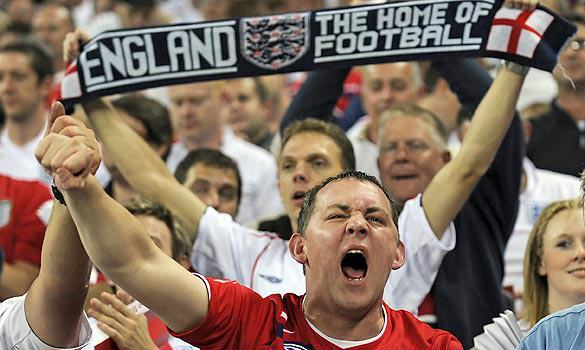

Home Shire Germany England Gallifrey
Football hooliganism is unruly, violent, and destructive behaviour by overzealous supporters of association football clubs, including brawling, vandalism and intimidation. Football hooliganism normally involves conflict between gangs, often known as football firms (the term derives from the British slang for a criminal gang), formed for the specific purpose of intimidating and physically attacking supporters of other teams. Other terms commonly used in connection with hooligan firms include "army", "boys", "casuals", and "crew". Certain clubs have long-standing rivalries with other clubs (usually, but not always, geographically close) and hooliganism associated with matches between them (sometimes called local derbies), is likely to be more severe.
I am far from a violent man, but I would love to travel to England and be a part of a football club's hooligans for a day. I don't want to fight or cause chaos, but the singing and chanting before and after a match is where the real excitement and energy takes place. The fans make the match fun, and I want to experience that once in my life.
